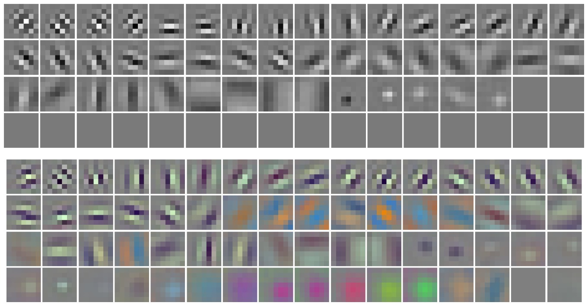

Latest Posts
Sept. 29, 2024

From Colour to Grey: Exploring Transfer Learning for Medical Imagery
Sophie Haynes
Exploring the differences between greyscale and colour network weights.
From Colour to Grey: Exploring Transfer Learning for Medical Imagery
Sophie Haynes
Exploring the differences between greyscale and colour network weights.